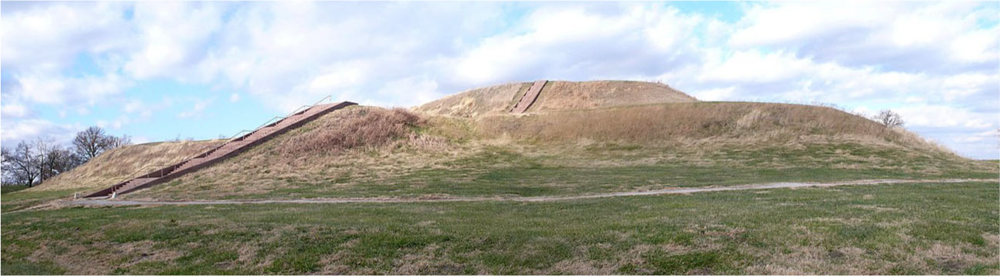
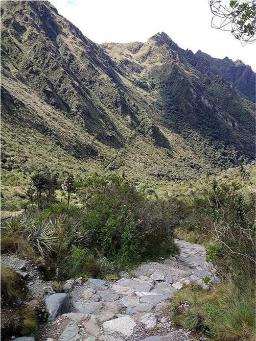
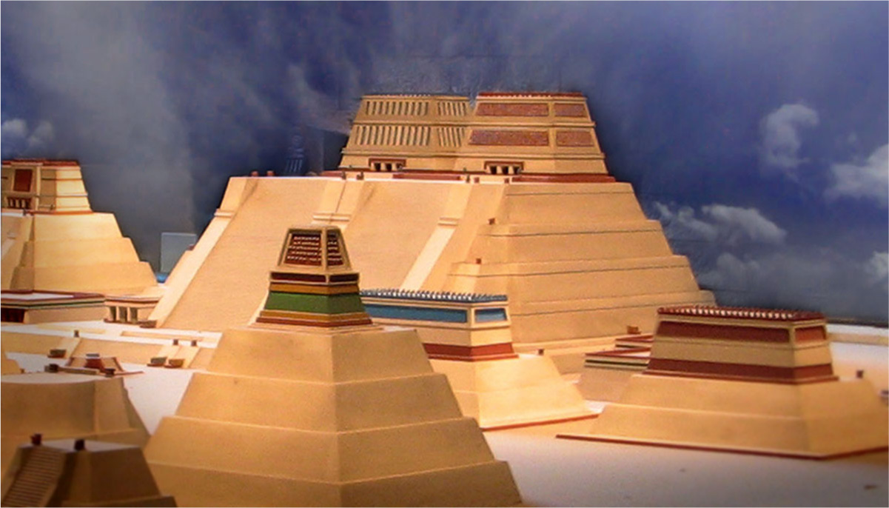

Cities / Americas
카호키아 — 평범한 언덕인 줄 알았는데
몽크스 마운드와 광장·주거지의 관계를 통해 북미 원주민 도시 카호키아를 살펴봅니다.
이야기 읽기Cities · 도시
그냥 지나치기 아까운, 도시의 작은 이야기들.
4개의 이야기

Cities / Americas
몽크스 마운드와 광장·주거지의 관계를 통해 북미 원주민 도시 카호키아를 살펴봅니다.
이야기 읽기Cities / Americas
근엄한 청동 사자들이 스포츠 헬멧을 쓰게 된 사연을 읽습니다.
이야기 읽기
Cities / Americas
안데스의 수도 쿠스코와 인카 도로망을 통해 이동·생산·통치의 연결을 읽습니다.
이야기 읽기
Cities / Americas
아스테카 수도의 제방길과 치남파, 공납을 통해 큰 도시를 유지하는 일상을 읽습니다.
이야기 읽기